A child in Grade 3, Islamabad, reading on a phone. October 2026.
Teach Well.
lesson plans, training
Is great teaching reaching classrooms?
Improve.
coaching, debriefs
Is every teacher getting better?
Learn.
a short check by the coach, the quiz at home, one move
Are children learning?
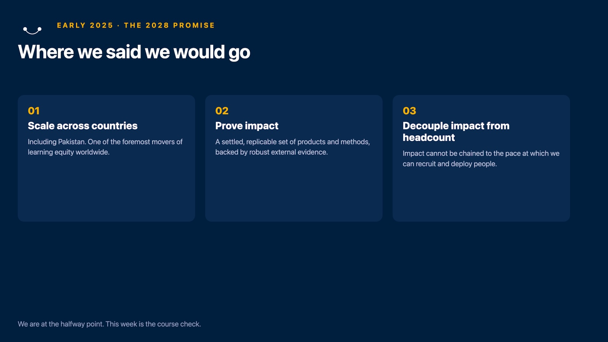
July: the second promise, prove impact.
Not yet.
Teach Well.
lesson plans, training
Is great teaching reaching classrooms?
Improve.
coaching, debriefs
Is every teacher getting better?
Learn.
a short check by the coach, the quiz at home, one move
Are children learning?
Teach well so the child learns. Improve so the child learns more.
The one in front of us.
First, we listen.
Islamabad:
28,000
lessons recorded this term, and we read them.
Teach Well sounds like this.
TeacherChild
An English grammar lesson, Grades 3 to 5, Islamabad.
An English grammar lesson, Grades 3 to 5, Islamabad.
Improve sounds like this.
CoachTeacher
A coach and a teacher after an observed lesson. Islamabad, September to October 2026.
And the child?
The story: a day at the river, a boat, stones on the way home.
Reading to an assessor. Rawalpindi, May 2026.
Another child.
The story: a day at the river, a boat, stones on the way home.
Reading on a phone, a grown-up beside them. October 2026.
What listening taught us.
Debriefs with a follow-up move teachers. Training with a deadline does not.
Head teachers and principals now observe too.
Are the children learning?
Two ways to know.
1
The coach's phone
in school, on a visit
2
The child at home
the quiz on a family phone
1 · The coach's phone
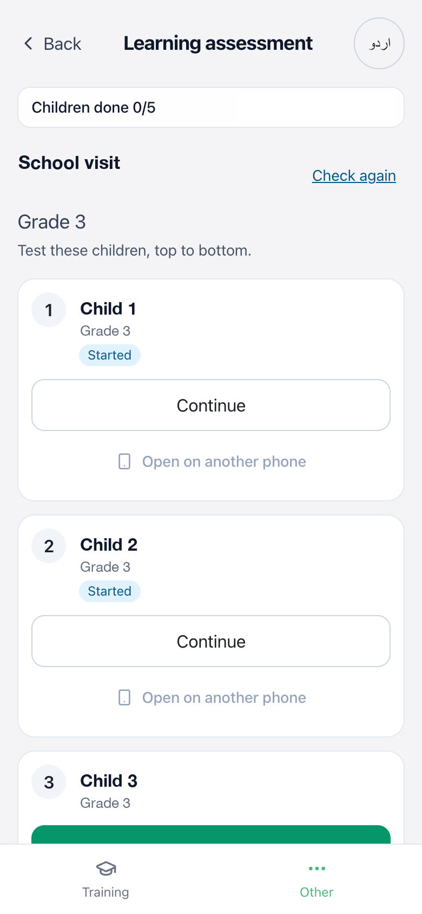
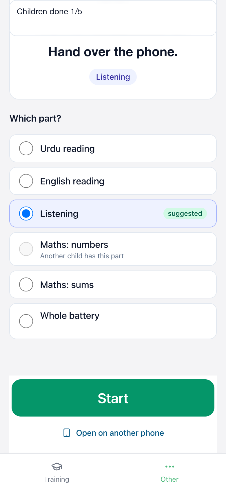
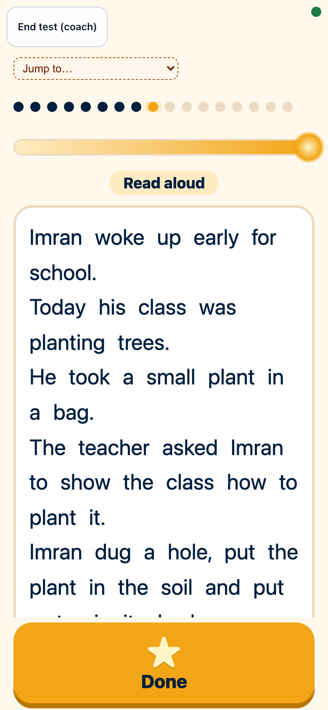
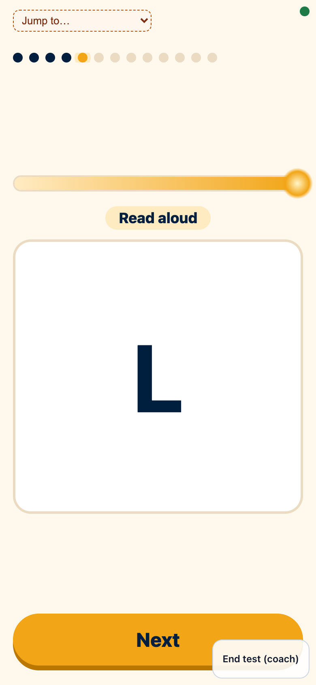
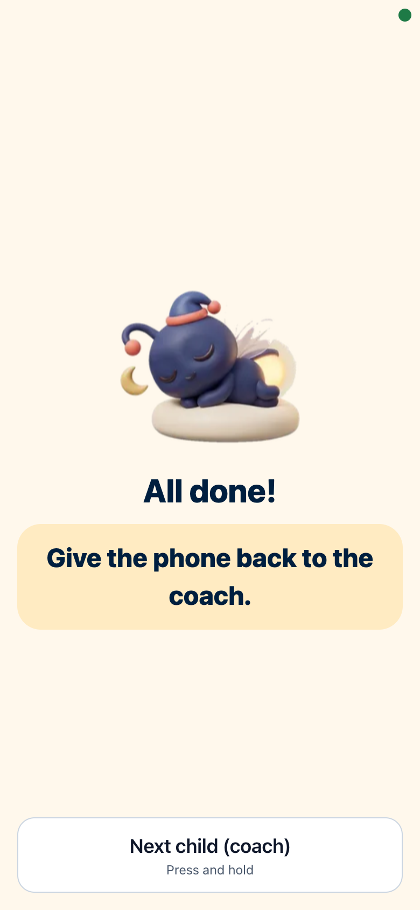
Five children on one visit
A short reading and maths check, on a phone
The recordings score themselves
Islamabad from this Monday; every region by about 19 November
on the coach's phone, in testing
2 · The child at home
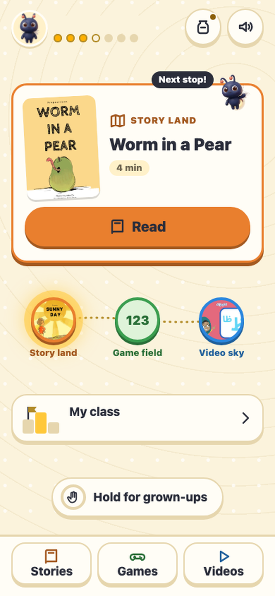
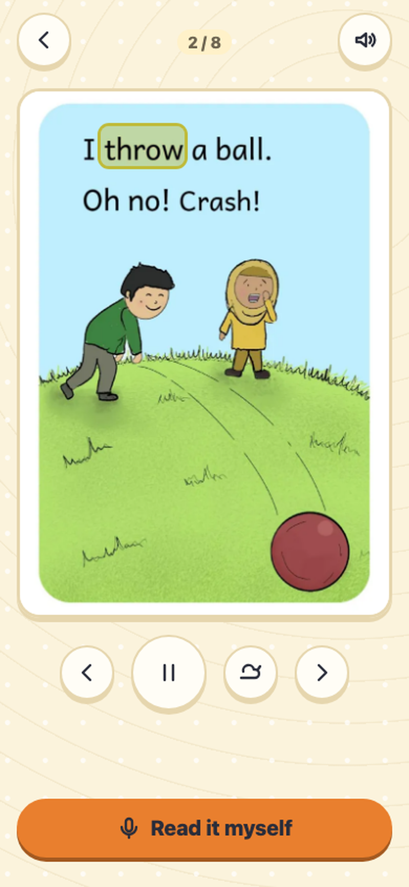
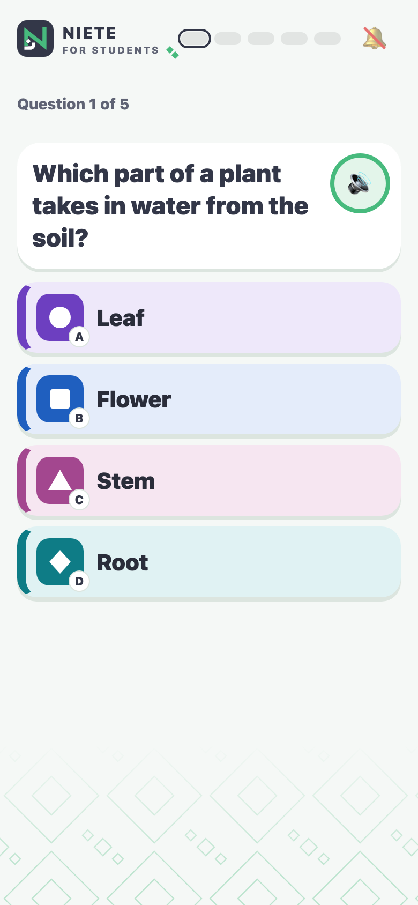
demo
WhatsApp stays the door.
Islamabad, this term.
What a region will see.
Grade 3
Grade 5
not yet reading words
reading slowly
fluent, understands little
reads with understanding
In Grade 3, seven children in every ten can't yet read a story fluently.
One priority skill for the region. One move in every debrief.
Rawalpindi, May 2026: 443 Grade 3 and 431 Grade 5 children
When we see the gaps, what do we do?
Listen
Notice
One move
Check
Teach Well.
lesson plans, training
Is great teaching reaching classrooms?
Improve.
coaching, debriefs
Is every teacher getting better?
Learn.
a short check by the coach, the quiz at home, one move
Are children learning?
The region around the child
Monday.
If you coach: a short check with a few children on visits, one move per debrief.
اگر آپ کوچ ہیں: دوروں پر چند بچوں کا مختصر جائزہ، اور ہر ڈی بریف میں ایک قدم۔
If you lead a region: your number now includes whether children learn; pick one change a month.
If you build or write: regions pull your work; publish it region by region.
If you bring in teachers: more teachers, and the funding to pay for it.
WhatsApp stays the door to Rumi. Everything else opens from it.
Appraisals: twice a year, on the rubric. First round in December.
Learning per dollar
How much more a child learns because of us
divided by what it costs
per $100
The leaderboard
First. End of 2028.
among programmes that train teachers
Every point is a child reading.
Our impact figure is still an estimate.
Letting go
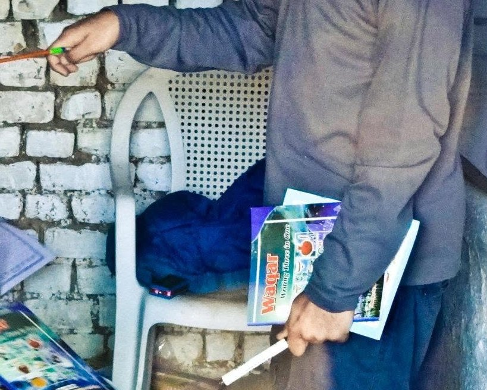
A school in a slum
Schools in our name
Government schools
Government coaches
Partners' coaches
Open source
Who comes in
Real access to public schools
Belief in Teach Well and Improve
Care about whether children learn
Our partner in Tanzania is working in government schools for the first time.
A partner from South Africa is coming to Pakistan to see how we write lesson plans so fast and give teachers more coaching with AI.
This quarter
Palestine
Moawin
Financial Times
Anthropic
The largest grant
Seven weeks after launch, more than 2,900 teachers in Palestine are planning lessons with us: our biggest region outside Islamabad.
Moawin's teachers used their lesson plans more steadily than anyone in Pakistan, and their coaches visited classrooms more often than anywhere else in Pakistan.
Rumi's coaching, in the Financial Times.
We now work alongside Anthropic's applied-AI team on making Rumi's coaching scores steadier.
This year we closed the largest single grant in Taleemabad's history.
More than 45,000 lessons recorded since August, across every region.
Thank you
Islamabad
Rawalpindi and Moawin
Gilgit-Baltistan
Balochistan
Sindh
KP
Tanzania
Kenya
Palestine
People and culture
Growth and fundraising
Open source
Teach Well.
lesson plans, training
Is great teaching reaching classrooms?
Improve.
coaching, debriefs
Is every teacher getting better?
Learn.
a short check by the coach, the quiz at home, one move
Are children learning?
Teach Well.
lesson plans, training
Is great teaching reaching classrooms?
Improve.
coaching, debriefs
Is every teacher getting better?
Learn.
a short check by the coach, the quiz at home, one move
Are children learning?
Questions.
1How we read 28,000 lessons
2The eight shifts
3The coach's check
4The child's home
5What children at home have done
6Learning per dollar
7Why our figure is an estimate
8Partners
9How we observe
10The timeline
11Monday, every role
12The quarter in numbers
13Region stages
14What stays the same
15Where we grow next
16Open source
17More moments
18The one in front of us
19Decided this month
How we read 28,000 lessons
28,403 lessons recorded in Islamabad's government schools, 12 July to 20 October. Every one was read.
1
Written out
Each recording is turned into text, with who taught it taken out.
2
Shuffled
No reader knows whose lesson they have.
3
Scored
AI readers score it on two rubrics: the World Bank's Teach, adapted for audio, and FICO, our own rubric of 34 indicators. The instructions were fixed before any result was seen.
4
Checked
A read counts only if a checker finds the reader's quotes, word for word, from the start, middle and end of the lesson.
1 of 2
Read twice
One lesson in ten (2,840) was read again by a different reader. The two agreed closely: 0.75 on Teach, 0.81 on FICO, where 1 is full agreement.
What a score is
What a reader can hear in the recording. Children talking to each other is almost never caught on a phone.
What we found
Teachers get better once, after their first AI-coach report, and then hold steady.
2 of 2
The eight shifts
1
Learning outcomes, everywhere
Every region has learning data flowing within a month.
2
One way to observe
The same observation principles, in every region.
3
One home for everyone
Each person sits in one region or one internal team; a team fits its region's stage.
4
Growth lives in the regions
One person per region for growth and fundraising; growth members meet weekly to share what worked.
1 of 2
5
Programme teams in the regions
The people who run each region's programme sit in one or two regions each, and the team grows.
6
A clear partner model
Who can come in, and what we do for them.
7
Where we grow next
Partner hot spots, not countries.
8
The impact team
What it owns is still open: page 19 lists it, with its date.
2 of 2
The coach's check
Who
The phone picks five children from one grade at random, plus two spares. The coach does not choose.
What
A short, trimmed reading and maths check, matched to the time of year: letters, words, a short story, questions and sums, all out loud.
Marking
The coach never types a score. The app marks the recordings, separate AI markers check them, and a person can listen back to any child.
1 of 2
Impartial
When a coach tests children, nobody helps a child read. We collect data so it would pass an outside check.
Checked
Coaches' own tests tend to run high, so their results are checked against outside tests.
Back to the coach
One action: the class to go to next, and one move to make.
When
Islamabad from the week of 26 October; every region within about a month.
2 of 2
The child's home
Islamabad today. WhatsApp stays the door to Rumi. Everything else opens from it.
Home pageA quizA storybook
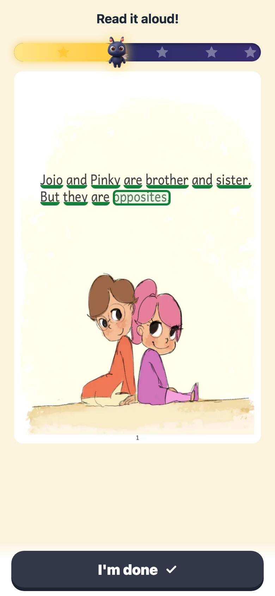
Read aloud (demo)
What children at home have done
18,677
children in Islamabad took a quiz this term, 17 August to 21 October. 15,692 finished one.
69,555
quizzes sat, from 861 teachers' classes.
72 · 14
children started reading aloud on the phone; 14 finished, to 20 October.
230 · 75
children opened a storybook since they went live on 19 October; 75 read a page aloud.
Who this is
Mostly children with a phone at home, so not every child. The coach's check reaches the ones the phone does not. Reading at home is starting, not big.
Learning per dollar: the method
LAYS per $100 asks one question: for every $100 spent, how much real learning does a child gain?
A year of learning in a strong school system counts as one. The gain, counted in those years, is divided by the all-in cost per child.
Researchers at Oxford and the World Bank keep a public table of 86 programmes. Only ones with a proper comparison group get on it.
Our impact figure is still an estimate.
Our best estimates put us in the middle of the table, between about 33rd and 56th. By the end of 2028 we want to be first.
1 of 2
Rank
Programme
Country
LAYS
1
Telling families what school earns: no teaching
Madagascar
140.99
2
School links to village councils
Indonesia
43.28
3
Grouping children by level
Kenya
41.49
4
School elections and village councils
Indonesia
16.67
5
Early years; trained its teachers
Mozambique
15.97
6
Teacher training + structured curriculum
Argentina
15.40
18
Tusome: structured teaching in reading
Kenya
4.90
32
Classroom observation + coaching
Brazil
2.65
Angrist and colleagues, 2023. Our impact figure is still an estimate.
2 of 2
Why our figure is an estimate
Our impact figure is still an estimate.
Our place on the table comes mostly from low cost. None of our studies has yet met a funder's bar, so our impact is estimated from programmes like ours.
What would count
A study with a comparison group, independent assessors and a plan written before the results.
The plan
Outside studies in at least three places in 2027.
What 20 needs
About 0.6 of a standard deviation of learning a year if cost per child falls as we grow; more if it does not. Programmes like ours usually give 0.2 to 0.3.
So
Children learn more, we prove it with outside studies, and cost does not rise.
Partners: who comes in, and what we do
Who can come in
Real access to schools: the one thing we never bend on.
Alignment on our theory of change, especially on learning outcomes.
Private-school partners only with a path or willingness into public systems.
One- or two-person organisations come in only inside a coalition.
Saying no is not zero contact: anyone can use Rumi and our open-source code for free.
1 of 2
What we do for partners
Structured pedagogy for a new curriculum in weeks, AI coaching, and data on use and learning.
Help to raise money: we apply together; the region's growth member leads it.
The partner leads fundraising and any independent evaluation; we design studies with them.
A 90-day scoping stage with a clear cut-off.
2 of 2
How we observe
Human-led and safe
Never correct or embarrass a teacher in front of the class. New observers learn one standard first.
One move, then check back
Every debrief ends with one thing to try tomorrow, and the next visit checks it.
Debriefs are measured
Debrief quality is standardised and measured. It is our target for this cycle.
1 of 2
Heads observe too
Head teachers and principals become regular observers in their own schools, learning the same standard as our coaches.
Tests stay impartial
When a coach tests children, nobody helps a child read. We collect data so it would pass an outside check.
Coaches hear first
Changes reach coaches before teachers, with the reason, and no target moves mid-cycle.
2 of 2
The timeline
Wed 21 Oct
Half an hour with every team that is changing, before the town hall.
Thu 22 Oct
The leadership team meets on the impact team and coaching roles. What it decided: page 19.
Mon 26 Oct
The quarter starts. Islamabad's coaches begin the learning check.
By about 19 Nov
Learning data flowing from every region.
January 2027
Tanzania grows past 1,000 teachers. We review the organic-growth test. Kenya's term-one test runs January to March.
End of 2028
20 LAYS per $100: first among programmes that train teachers.
Monday, every role
A lieutenant leads a region; an operator runs a region's programme.
Role
What changes in your week
What you walk away with
Lieutenant
You own your region's results, learning outcomes included, and pick one change from the data each month. Your growth member and the person who runs your programme are in your huddle.
A team that fits your stage, learning data every month, and an LT sponsor.
Field staff who work in schools (FDS)
You work in schools and use the class-by-class signal to choose where to push.
A clear signal of which classes are stuck, and why.
1 of 3
A lieutenant leads a region; an operator runs a region's programme.
Role
What changes in your week
What you walk away with
Operator
You sit in one or two regions and answer for the number with the FDS.
Fewer regions to juggle, and a weekly meeting with other operators to learn from.
Growth member
You own growth and fundraising in one region and join every huddle.
One clear number, a leadership coach, and grant-writing support.
2 of 3
A lieutenant leads a region; an operator runs a region's programme.
Role
What changes in your week
What you walk away with
Internal teams
Your work is pulled by the regions: publish it region by region.
Work that a region uses the week it ships.
Coaches and field teams
A quick learning check with a few children on visits, and one move per debrief.
Data that tells you what to do tomorrow.
3 of 3
The quarter in numbers
Across the organisation, 17 August to 21 October
46,905
lessons recorded across every region: teachers' own recordings and coach visits.
27,899
of them in Islamabad.
18,677
children in Islamabad took a quiz.
Since mid-October, in Islamabad
We can see which lessons are opened, sent or recorded. Since 13 October, Islamabad only.
1 of 2
Own roster, to 21 Oct
Since
Planning
Plans
Visits
Islamabad, Grades 1 to 5
17 Aug
2,781 of 3,549
98,350
4,329
Islamabad, Grades 6 to 12
17 Aug
929 of 3,740
2,623
897
Rawalpindi
24 Aug
1,017 of 1,698
14,851
297
Moawin
24 Aug
363 of 493
9,708
692
Palestine
6 Sep
2,972 of 3,233
36,825
0
Tanzania
from 6 Jul
207 of 212
3,796
1,485
Balochistan
3 Aug
81 of 109
410
0
Sindh
15 Aug
35 of 49
572
14
Kenya
24 Aug
21 of 60
82
4
2 of 2
Region stages
Stage
Who sits in the region
Regions today
Contract · 1,000+ teachers
A lieutenant (who leads the region), two or more field staff who work in schools (FDS), someone to run the programme, a full-time growth member
Islamabad, Palestine, Punjab (Rawalpindi and Moawin)
Contract · under 1,000 teachers
A lieutenant, one FDS, someone to run the programme shared with at most one other region, a full-time growth member
Tanzania (1,000+ from January), Balochistan, Kenya
1 of 2
Stage
Who sits in the region
Regions today
Unpaid pilot
One FDS, a full-time growth member, someone to run the programme about half the time
Sindh, Gilgit-Baltistan
No users yet
One full-time growth member. One goal: an unpaid pilot in about 100 schools, with government agreeing up front to scale it if it works
KP, India, South Africa, Uganda, Ethiopia
2 of 2
What stays the same
The two questions: Teach Well and Improve.
Structured pedagogy plus coaching is the core. No new interventions in the main programmes this quarter.
WhatsApp stays the door to Rumi. Everything else opens from it.
Public school systems stay the focus.
Your region comes first.
Where we grow next
Inbound
From any country, if the partner passes our entry filter.
Outbound
Where funding flows (90% of the weight) plus a few open markets nobody serves yet (10%). Not crowded markets such as the US or Kenya.
Partner hot spots
We chase good partners, not countries. Top hot spots today: India, South Africa, Uganda, Ethiopia, Ghana.
How
The growth team gets named partners with introductions through our networks, and builds relationships with the World Bank's country teams.
Open source
28 January 2026
Rumi's code goes public, under the Apache 2.0 licence: an AI teaching assistant on WhatsApp.
Free for anyone
Saying no to a partner is not zero contact: anyone can use Rumi and our open-source code for free.
3 June 2026
The first coalition call with other organisations building AI coaching for teachers. Then 25 August and 3 October.
From this month
Open source joins growth: it spreads Rumi and leads the conversation.
More moments
Nine more recordings. Press on from here, or open one from the index.
a17a
Says the problem back
Gets it. Then the hard one.
a17b
August, the same teacher
'What does role model mean?'
a17c
September, the same teacher
'The sentence you made, what is it?'
a17d
A closed check, for contrast
'Has everyone understood?'
a17e
Reads to the end, then stops
Stops the reading themself.
a17f
All the way to the end
Urdu, Grade 4, a 60-word story
a17g
Call and echo
One word at a time.
a17h
A whole English story
Read in thirty seconds.
a17i
Why does the tenths digit decide it
Maths, comparing decimals
Says the problem back
AdultChild
Says the problem back. Gets it. Then the hard one. Maths word problems, read aloud · Grade 3 · reading and maths test with an assessor · Rawalpindi · May 2026
August, the same teacher
TeacherClass
August: spell it, say it back. 'What does role model mean?' English · Grades 1 to 2 · self-serve recording · ICT, Islamabad · August 2026 The same teacher, a month apart.
September, the same teacher
TeacherChild
September: 'The sentence you made, what is it?' 'Request.' English · Grades 3 to 5 · self-serve recording · ICT, Islamabad · September 2026 The same teacher, a month apart.
A closed check, for contrast
TeacherClass
'Has everyone understood?' 'Yes, ma'am.' English · Grades 3 to 5 · self-serve recording · ICT, Islamabad
Reads to the end, then stops
Reads to the end, then stops the reading themself. Urdu · Grade 5 · reading a 60-word story on a phone (the quiz Challenge) · October 2026
All the way to the end
All the way to the end. Urdu · Grade 4 · reading a 60-word story on a phone (the quiz Challenge) · October 2026
Call and echo
TeacherClass
Call and echo, one word at a time. English reading drill · coach-observed lesson · ICT, Islamabad
A whole English story
A whole English story, read in thirty seconds. English · Grade 3 · reading a 60-word story on a phone (the quiz Challenge) · October 2026
Why does the tenths digit decide it
TeacherChild
'Why does the tenths digit decide it?' Maths, comparing decimals · Grades 3 to 5 · self-serve recording · ICT, Islamabad
The one in front of us
We'll endeavour to move the learning outcomes of entire districts and countries and provinces, yet look at the numbers as if the child and teacher were in front of us.
Haroon, 22 October 2026
Decided this month
1
Children's learning is the test. Our target is 20 LAYS per $100 by the end of 2028, with proficiency (every child reading and writing with understanding) as the real aim.
2
Every region collects learning data from this quarter, every month. Coaches run a short reading and maths check with a few children on their visits, and children reach us at home on a parent's phone.
3
More people observe, and the debrief is the lever. Principals and head teachers become regular observers; one move per teacher, checked on the next visit.
4
One home for everyone, and the region comes first. Growth and the people who run each programme sit in the regions; open source joins growth.
5
Partners bring the schools. Who can come in: real access to schools, and alignment on our theory of change. Coalitions are the default route in.
1 of 2
Still open, with a date
What coaches answer for
Mon 26 Oct
The impact team's remit
Mon 26 Oct
Study design, and the items not yet reached
Mon 26 Oct
The review of coalitions as the default route in
January
The test of free sign-ups where we have no partner